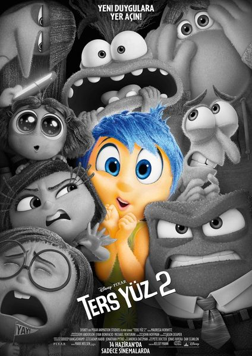
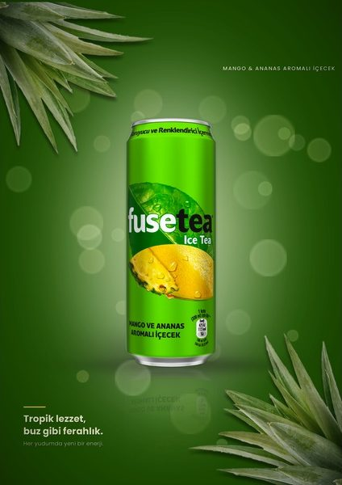

Projeler
Grafik Animasyon I dersi kapsamında hazırladığım çalışmalar.

Ters Yüz 2 afişi
Photoshop'ta History Brush (Geçmiş Fırçası) aracını öğrenmek için hazırladığım çalışma. Çok sevdiğim animasyon Ters Yüz 2'yi seçtim: karakterleri siyah-beyaza çevirip yalnızca Neşe'nin rengini fırçayla geri getirdim, böylece bakışlar tek bir noktada toplanıyor. Afişi, filmin ruhunu yansıtan özlü bir sözle tamamladım: “Bazen tek bir renk, bütün hikâyeyi anlatmaya yeter.”
- Amaç
- Photoshop'ta History Brush (Geçmiş Fırçası) aracını öğrenmek.
- Nasıl yaptım
- Çok sevdiğim animasyon Ters Yüz 2'yi seçtim. Karakterleri siyah-beyaza çevirip yalnızca Neşe'nin rengini fırçayla geri getirdim.
- Sonuç
- Bakışlar tek bir noktada toplanıyor. Afişe filmin ruhunu yansıtan özlü bir söz ekledim: “Bazen tek bir renk, bütün hikâyeyi anlatmaya yeter.”
- Araçlar
- PhotoshopHistory Brush

Fusetea ürün afişi
Bir ürün tanıtımı çalışması: mango ve ananas aromalı içecek için yeşilin her tonunu kullandım. Koyu zeminden yapraklara, yumuşak ışık parıltılarından kutunun metalik yüzeyine kadar tüm renkler aynı aileden; sonuç ferah, canlı ve etkileyici bir tanıtım afişi.
- Amaç
- Bir ürünün tanıtımını yapan etkileyici bir afiş hazırlamak.
- Nasıl yaptım
- Mango ve ananas aromalı içecek için yeşilin her tonunu kullandım: koyu zeminden yapraklara, yumuşak ışık parıltılarından kutunun metalik yüzeyine kadar.
- Sonuç
- Tüm renkler aynı aileden olduğu için ferah, canlı ve etkileyici bir tanıtım afişi çıktı.
- Araçlar
- Ürün tanıtımıYeşil tonları

Spawn karakter çalışması
Kara kalem bir çizimin dijital boyaması. Gölgelendirmelerle karaktere hacim verdim, doğru renk seçimleriyle onu sahnenin tam merkezine taşıdım: kırmızı pelerin ve metal detaylar, sade kayalık zeminde öne çıkıyor.
- Amaç
- Kara kalem bir çizimi gölgelendirmelerle ve doğru renk seçimleriyle boyamak.
- Nasıl yaptım
- Gölgelendirmelerle karaktere hacim verdim. Renkleri, karakter sahnenin odağı olacak şekilde seçtim.
- Sonuç
- Kırmızı pelerin ve metal detaylar, sade kayalık zeminde öne çıkıyor.
- Araçlar
- Kara kalem boyamaGölgelendirmeRenk seçimi

Çiftlik oyunu sahnesi
Kendi fikrim olan bir çiftlik oyunu için Smart Object (Akıllı Nesne) tekniğiyle tasarladığım sahne. Tarla, çiçek bahçesi ve hayvan ağılları; inekler, domuzlar, koyunlar, atlar, tavuklar ve bitkiler oyunun dünyasını canlandırıyor. Smart Object sayesinde her öğe kalite kaybı olmadan düzenlenebiliyor.
- Amaç
- Smart Object (Akıllı Nesne) tekniğini kullanarak bir oyun sahnesi tasarlamak.
- Nasıl yaptım
- Kendi fikrim olan bir çiftlik oyunu için tarla, çiçek bahçesi ve hayvan ağılları kurdum; inekler, domuzlar, koyunlar, atlar, tavuklar ve bitkiler sahneyi canlandırıyor.
- Sonuç
- Smart Object sayesinde her öğe kalite kaybı olmadan düzenlenebiliyor.
- Araçlar
- Smart ObjectOyun görseli

Image Stack: boş cadde
Bir yerin birçok fotoğrafını çektim; karelerde hareketli araçlar vardı. Photoshop'ta bu fotoğrafları Image Stack (görüntü yığını) tekniğiyle birleştirip hareketli nesneleri kaldırdım. Yol ve bina olduğu gibi kaldı, geçen araçlar silindi.

- Amaç
- Image Stack tekniğini öğrenmek: aynı yerin fotoğraflarını birleştirip hareketli nesneleri kaldırmak.
- Nasıl yaptım
- Bir yerin birçok fotoğrafını çektim. Karelerde araçlar hareket ediyordu. Fotoğrafları Photoshop'ta bir yığın (stack) olarak birleştirdim ve hareketli nesneleri kaldırdım.
- Sonuç
- Yol ve bina olduğu gibi kaldı, geçen araçlar tamamen silindi: karşımda boş bir cadde fotoğrafı var.
- Araçlar
- PhotoshopImage Stack

Starbucks web sayfası
Starbucks'ın web sitesinin arayüzünü Photoshop'ta, gelişmiş tekniklerle ve büyük bir titizlikle tasarladım. Yılbaşı kampanyasına uygun renkler, içecekler / öneriler / kampanyalar şeklinde net bölümler ve okunaklı bir düzen kurdum.
- Amaç
- Bir web arayüzü hazırlamak.
- Nasıl yaptım
- Starbucks'ın web sitesinin arayüzünü Photoshop'ta, gelişmiş tekniklerle ve büyük bir titizlikle tasarladım.
- Sonuç
- Yılbaşı kampanyasına uygun renkler, net bölümler (içecekler, öneriler, kampanyalar) ve okunaklı bir düzen çıktı. Bu çalışmayı blogda da anlattım.
- Araçlar
- PhotoshopWeb arayüzü